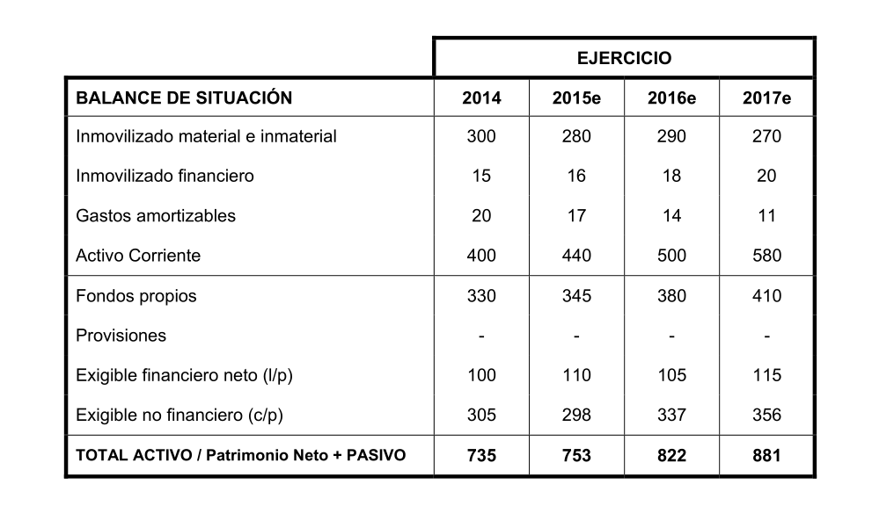
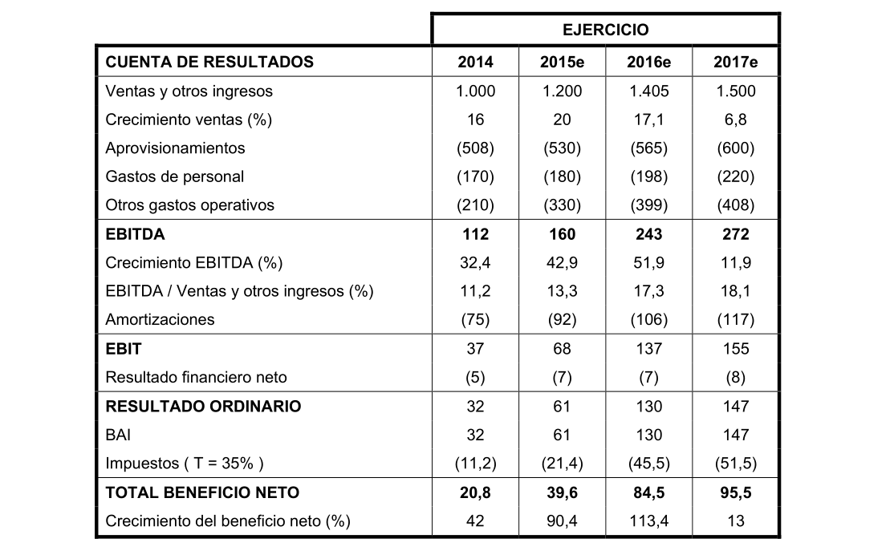
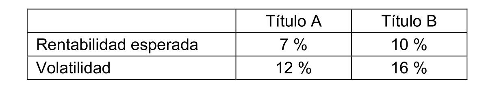
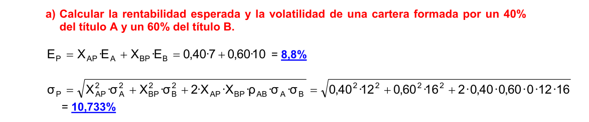
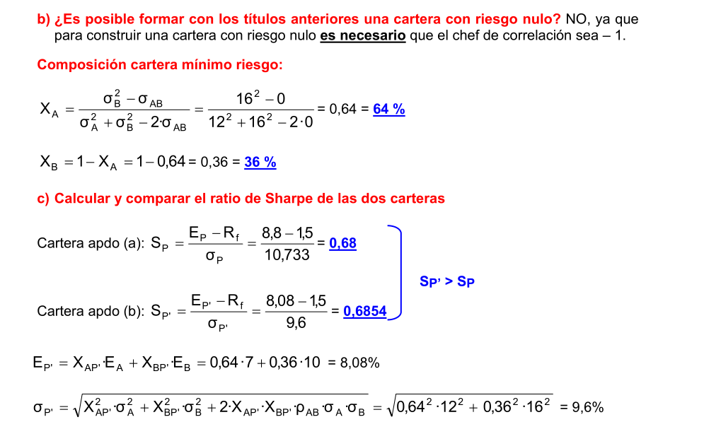

Casos prácticos 2019
Cobertura con opciones
Un inversor decide proteger su cartera comprada de renta variable indexada al IBEX-35 ya que estima que éste último puede registrar caídas en los próximos días. El valor efectivo de la cartera en el momento de la cobertura es de 10.560.000€.
Las cotizaciones que observa actualmente en mercado son las siguientes:
Cotización del IBEX-35: 8.396,4 puntos
Cotización del Contrato del Futuro del IBEX: 8.386 puntos
Cotización del Contrato del Futuro sobre el Mini-IBEX: 8.380 puntos
Datos a tener en cuenta (datos correspondientes a los últimos 3 meses):
Coeficiente de correlación entre el IBEX y la cartera de contado: 0,8565
Volatilidad anualizada de la rentabilidad IBEX: 28,32%
Volatilidad anualizada de la rentabilidad de la cartera comprada: 24,33%
Multiplicador del Futuro del IBEX: 10€
Multiplicador del Futuro del Mini-IBEX: 1€
Subyacente de las opciones sobre IBEX: Futuro del Mini-IBEX
Delta de las opciones call sobre IBEX: 0,5625
Precio de las opciones call vendidas (a 3 meses a vencimiento ATM): 415,13€
- Explique y cuantifique el proceso de cobertura de un 25% de la cartera mediante venta
Hay que calcular el número de opciones call a vender mediante el cálculo del ratio de cobertura:
\[RC=-\frac{Valor\ efectivo\ de\ la\ cartera\cdot\ \beta_{cartera}}{Nominal\ del\ contrato\cdot \Delta}\] donde,
\(\beta_{cartera}\), Beta entre cartera y benchmark (índice)
\(\Delta\), Delta venta de call [-1, 0]
Valor Efectivo cartera = 10.560.000€
Beta:
La beta de la podemos expresar como,
\[\beta_{A}=\frac{Cov(R_A,R_B)}{\sigma^2_m}=\rho_{A,m}\cdot\frac{\sigma_A}{\sigma_m}\] o, también como:
\[\beta_{A,m}=\rho_{A,m}\cdot\frac{\sigma_A}{\sigma_m}\] en este caso empleamos la segunda fórmula ya que es la única de estas dos que se adapta a los datos que nos dan en el enunciado. Donde,
\(\beta_{p}\), es la beta de la cartera p con el mercado
\(\rho_{p,m}\) es el coeficiente de correlacion de la cartera p con el mercado
\(\sigma_{p}\), es la desviación típica de la cartera p
\(\sigma_{m}\), desviación típica del ibex (mercado o benchmark)
\[\beta_{p}=0,8565\cdot\frac{24,33\%}{28,32\%}= 0,73583\]
Nominal del contrato = Precio del Mini-Ibex · multiplicador = 8.380·1= 8.380€
Delta call vendida = -0,5625
Luego para cubrir el 100% de la cartera
\[RC=-\frac{10.560.000\cdot\ 0,73583}{8.380\cdot -0,5625}=-1.648\ call\] necesitamos vender 1.648 call.
YPor consiguiente si queremos cubrir el 25% de cartera necesitaremos vender:
\[25\%^s/1.648=412\ call\]
Este tipo de caso práctico es muy recurrente en los exámenes de N II y EFA de EFPA. Recordemos que las opciones sobre IBEX-35 tienen como subyacente al futuro del mini-IBEX y no al futuro del IBEX.
Características de renta Fija
Una empresa emite una serie de bonos corporativos (sin derivados) en el emercado a diez años con un cupón del 10% y amortización a la par.
¿Es un producto que les son aplicables la normativa MiFID II a partir de 2018? ¿Es complejo o no complejo?
Si los tipos de mercado en el momento de la emisión están al 10% para el mismo plazo, ¿cuál es su precio?
¿Cuál sería el precio del bono en el caso de que el tipo de mercado suba al 12%? Razone la respuesta.
¿Cuál sería el precio del bono en el caso de que el tipo de mercado baje al 8%? Razone la respuesta.
- Tipología del producto
Es un producto que les sería de aplicación la normativa MiFID II desde el el 3 de enero de 2018, y al tratarse de bonos corporativos (sin que lleven aparejado un derivado), se encuadrán dentro de los productos no complejos automáticamente.
- Precio de un bono con los tipos al 10%
Calculamos como una renta constante de diez términos los cupones y despues le sumamos el descuento del nominal,
\[P_0=C\cdot\frac{1-\left(1+i\right)^{-n}}{i}+\frac{N}{(1+i)^n}\] que al sustituir y calcular tenemos,
\[P_0=10\cdot\frac{1-\left(1+0,10\right)^{-10}}{0,10}+\frac{100}{(1+0,10)^{10}}=100\]
que el precio entero del bono expresado como porcentaje del nominal es de 100%.
- Precio del bono con los tipos al 12%
\[P_0=10\cdot\frac{1-\left(1+0,12\right)^{-12}}{0,10}+\frac{100}{(1+0,12)^{10}}=88,7\] donde el precio entero del bono expresado como porcentaje del nominal es de 88,7%, esto es una caida en el precio de 11,30.
Logica de mercado:
Si un inversor no tuviera inmovilizada su inversión en el bono, podría obtener una rentabilidad superior adquiriendo otros bonos qu en ese momento ofrecen un interés del 12%. El precio del bono debe ser menor, de modo que al pagar un precio menor, la contraprestación recibida se ajuste a la rentabilidad del mercado, esto es 12%.
- Precio del bono con los tipos al 8%
\[P_0=10\cdot\frac{1-\left(1+0,08\right)^{-12}}{0,08}+\frac{100}{(1+0,08)^{10}}=113,42\]
donde el precio entero del bono expresado como porcentaje del nominal es de 113,42%, esto es una subida en el precio de 13,42.
Logica de mercado:
El título se debe revalorizar ya que ofrece una mayor rentabilidad que el mercado. Por otro lado se observa que el cambio de valor por una subida y bajada de los tipos no es proporcional.
La repercusión en el precio de un bono suele indicar puntos básicos ( basic points, o en la terminología española d elos mercados “pipos”“), correspondiendo cada punto a una centésima parte de un punto porcentual. Si un bono sube su precio de 93,50 a 93,65 se dirá que subió 15 puntos básicos; es decir, un 0,15%.
Por otro lado, el efecto de una variación de tipos sobre el precio de un bonoserá mayor cuando mayor sea la vida que le quede al bono para amortizarse.
Con el paso del tiempo, se acorta la vida del bono y el precio de éste se irá acercando al precio de reembolso.
Especulación con futuros
Responsable de la empresa GENCOIN pretende decidir si compra una cartera de acciones que replique un índice o si directamente compra un futuro especulativo (rentabilidad) con el Ibex a 11.200. si transcurridos 25 días el Ibex está situado en los 11.800 puntos.
¿Qué rentabilidad obtendría si se compra la cartera de acciones, desembolsando 112.000 € o en el caso de comprar contrato de futuro sobre el Ibex 35 a 11.200 puntos (10.000 € de garantía)? ¿Cuál sería el efecto apalancamiento?
En el caso del futuro del Ibex 35 (cada punto = 10 euros), si se exigen garantías diarias de 10.000 € por contrato. ¿Qué liquidaciones se realizarán cada día en las siguientes situaciones?
2.1 Día 1: Compra 20 futuros a 9.480 puntos. Comisión 16,50 € por contrato. Precio de Liquidación Diario (PLD) al cierre=9.460 puntos.
2.2 Día 2: PLD al cierre = 9.510 puntos.
2.3 Día 3: Venta de 5 futuros a 9.500. Cierre PLD = 9.485. Comisión = 16,50 €
2.4 Día 4: Venta de 15 futuros a 9.530. Vto del futuro PLD = 9.5830 Comisión = 16,50 €
¿Las acciones y el futuro son productos que les son aplicables la normativa MiFID II a partir de enero de 2018? ¿son complejos o no complejos?
- Se compra la cartera de acciones, desembolsando 112.000 € VS compra del contrato de futuro sobre el Ibex 35 a 11.200 puntos -> 10.000 € (garantía)
Posición contado. Comprando Ibex 35:
\[R_C=\frac{118.000-112.000}{112.000}\cdot 100=5,357\%\] Posición de Futuro:
\[R_F=\frac{118.000-112.000}{10.000}\cdot 100=60\%\] Efecto apalancamiento:
\[A=\frac{112.000}{10.000}=11,20\]
- Cuadro resumen liquidaciones:

Acciones: quedan encuadradas dentro de MiFIDII y, por tanto, le son de aplicación la normativa a partir de su entrada en vigor el pasado 3 de enero de 2018, y al tratarse de acciones ordinarias de sociedades admitidas a cotización en mercados regulados o equivalentes de terceros países (y NO acciones convertibles privilegiadas convertibles) son suministro NO complejos automáticamente.
Futuro: quedan encuadradas dentro de MiFIDII y, por tanto, le son de aplicación la normativa a partir de su entrada en vigor el pasado 3 de enero de 2018, y al tratarse de una tipología de derivado, en concreto un futuro especulativo, siempre tiene la calificación de producto complejo.
Cobertura con futuros (Euro Stoxx 50)
El 8/1/2007 un inversor posee la cartera de acciones, que figura detallada en el cuadro 1, y teme que se produzca una importante e inmediata caída de las cotizaciones bursátiles de las acciones. Por ello, decide efectuar una operación de cobertura con contratos de futuros sobre Euro Stoxx 50 con vencimiento en enero de 2007 según los datos que aparecen en el cuadro 2.
- Situación de los mercados al 8/1/2007
Cuadro 1 (cartera de valores)
| Valores | Nº Valores | Precio (€) | Beta |
|---|---|---|---|
| AAA | 2.000 | 22,00 | 1,15 |
| BBB | 5.000 | 14,00 | 0,80 |
| CCC | 8.000 | 13,00 | 1,04 |
| DDD | 2.000 | 40,00 | 0,90 |
| EEE | 7.000 | 24,00 | 0,70 |
Cuadro 2 (Futuro Euro Stoxx 50, vencimiento enero 2007)
| Compra | Volumen | Venta |
|---|---|---|
| - | 20 | 4.218 |
| - | 4 | 4.216 |
| 4.215 | 5 | - |
| 4.213 | 16 | - |
Euro Estoxx 50 al contado: 4.205,40
El 16/1/2007 decide cancelar la operación de cobertura después de mantener intacta la cartera de acciones, según la información que se desprende de los cuadros 3 y 4:
- Situación de los mercados al 16/1/2007
Cuadro 3 (cartera de valores)
| Valores | Nº Valores | Precio (€) |
|---|---|---|
| AAA | 2.000 | 20,00 |
| BBB | 5.000 | 13,00 |
| CCC | 8.000 | 12,00 |
| DDD | 2.000 | 36,00 |
| EEE | 7.000 | 23,00 |
Cuadro 4 (Futuro Euro Stoxx 50, vencimiento enero 2007)
| Compra | Volumen | Venta |
|---|---|---|
| - | 9 | 3.952 |
| - | 5 | 3.950 |
| 4.215 | 2 | - |
| 4.213 | 10 | - |
Euro Estoxx 50 al contado: 3.950,00
- Notas de interés:
Las comisiones de compra y venta de futuros ascienden a 3 euros por cada contrato en compra, venta o vencimiento.
Los depósitos de garantía se remuneran exactamente igual que la liquidez que posee el titular, en una cuenta, en el miembro de mercado, remunerada a tipos de mercado monetario en repos a un día.
Ninguna de las 50 acciones integrantes del índice Euro Stoxx 50 va a pagar dividendos o ampliar capital entre la fecha de inicio de la cobertura y la fecha de vencimiento del contrato de futuros Euro Stoxx 50 con vencimiento en enero de 2007.
El valor del tick o multiplicador para futuros Euro Stoxx 50 es 10 euros.
SE PIDE:
Determinar los resultados combinados de la operación de cobertura con futuros en términos absolutos.
Apartado a
- Con fecha 8/1/2007 la posición en futuros será vendida, esto es, vender contratos de fututro sobre el Euro Estoxx 50
Apartado b
- Calculamos el Ratio de Cobertura (RC) con la siguiente fórmula:
\[RC=-\frac{Valor\ efectivo\ de\ la\ cartera\cdot\ \beta_{cartera}}{Indice\ al\ contado\cdot multiplicador}\]
- Luego, necesitamos primeramente hallar el valor de efectivo de la cartera (valor de mercado) y su beta (a partir de las betas individuales de los valores del cuador 1). Resumimos los resultados de estos calculos en la tabla siguiente:
| Valor | Acciones | Precio(€) | Beta | Efectivo(€) | Peso | Beta(\(\beta_c\)) |
|---|---|---|---|---|---|---|
| a | P | B | \(E=a\cdot P\) | \(w=E\cdot VC\) | \(w\cdot B\) | |
| AAA | 2.000 | 22,00 | 1,15 | 44.000 | 0,09442 | 0,108583 |
| BBB | 5.000 | 14,00 | 0,80 | 70.000 | 0,15021 | 0,120168 |
| CCC | 8.000 | 13,00 | 1,04 | 104.000 | 0,22318 | 0,232107 |
| DDD | 2.000 | 40,00 | 0,90 | 80.00 | 0,17167 | 0,154503 |
| EEE | 7.000 | 24,00 | 0,70 | 168.000 | 0,36052 | 0,252364 |
| VC=466.000 | 1 | \(\beta_c=0,8677\) |
- sabemos también que, el futuro Euro Estoxx 50 al contado = 4.205,40 y el multiplicador = 10. Ahora bastará con sustituir los valores en la fórmula del RC:
\[RC=-\frac{466.000\cdot0,8677}{4.205,40\cdot 10}=9,615 \approx 10\ contratos\]
- así tendremos 5 contratos a 4.215 y 5 a 4.213 (cuadro 2), a un precio medio de 4.214 ((4.215+4.213)/2).
Apartado c
- Como resultado de la cobertura, tenemos 10 contratos de futuros sobre el Euro Estoxx 50 al precio indicado en el cuadro 4. Esto es, 5 contratos a 3.950 y, 5 contratos a 3.952 y a un precio medio de 3.951 ((3.950+3.952)/2). La tabla siguiente resume los resultados:
| Inicio | Final | Total | |
|---|---|---|---|
| Cartera | 466.000 | 434.000(cuadro 4) | -32.000 |
| Futuro | \((4.214-3.951)\cdot 10\cdot 10-10\cdot 3\cdot 2\) | 26.240 |
- Como resultado neto de la operación tenemos que, combinando acciones y futuros, la pérdida ha sido de - 5.760 (-32.000+26.240).
NOTA: hay que tener en cuenta los gastos, esto es: “las comisiones de compra y venta de futuros ascienden a 3 euros por cada contrato en compra, venta o vencimiento”. Luego, en este caso el importe de las comisiones será de 60€ (10 contratos x 3€ x 2 operaciones).
Características de una cartera (II)
Se dispone de la siguiente información relativa a dos acciones, A y B:
| Activo | Rentabilidad Esperada (%) | Volatilidad (%) | Coef. Correlación (A,B) |
|---|---|---|---|
| A | 9% | 16% | 0,40 |
| B | 14% | 24% |
Si del presupuesto destinado a la inversión bursátil se invierte el 40% en el título A y el 60% restante en el B, auxiliándose con los resultados aportados por Markowitz, se pide:
Rentabilidad media que se espera obtener con la cartera así construida.
Volatilidad de la cartera.
Determinar cuál sería la combinación de cartera de mínimo riesgo.
En caso de que los importes a invertir se destinaran un 50% al título A y un 50% en un activo libre de riesgo que ofreciera una rentabilidad del 2,5%, ¿cuál sería entonces la rentabilidad y la volatilidad de la cartera?
¿Cuál de las tres carteras alternativas resulta preferible?
Apartado 1
- Calculamos la rentabilidad esperada de la cartera (\(E_p\)) como:
\[E_p= w_A \cdot E_A + w_B \cdot E_B\]
- donde al sustituir y calcular, tenemos que:
\[E_p= 0,40 \cdot 9\% + 0,60 \cdot 14\%=12\%\]
Apartado 2
- Calculamos la volatilidad esperada de la cartera (\(\sigma_p\)) como:
Volatilidad de una cartera en función del coeficiente de correlación
\[\sigma_p=\sqrt{w_{A}^2\cdot\sigma_A^2+w_B^2\cdot\sigma_B^2+2\cdot w_A\cdot w_B\cdot\rho_{A,B}\cdot\sigma_{A}\cdot\sigma_{B}}\]
Donde,
\(\sigma_p\), es la volatilidad (riesgo) de la cartera \(p\).
\(w_A\), es la ponderación (o proporción) del activo \(A\) dentro de la cartera \(p\).
\(\sigma_A\), es la varianza del título \(A\).
\(w_B\), es la ponderación (o proporción) del activo \(B\) dentro de la cartera \(p\).
\(\sigma_B\), es la varianza del título \(B\).
\(\rho_{A,B}\), es el coeficiente de correlación entre los activos A y B.
donde al sustituir y calcular, obtenemos el siguiente resultado:
\[\sigma_p= \sqrt{0,40^2 \cdot 16^2 +0,60^2 \cdot 24^2+2\cdot 0,40\cdot w_2\cdot 0,4\cdot 16\cdot24}=17,95\%\]
Apartado 3
- Se trata de calcular los pesos para cada activo que hacen que la volatilidad de la cartera sea la mínima posible, dados unos niveles de volatilidad y correlación para los 2 activos que forman la cartera. Luego calculamos la composición de la cartera de mínimo riesgo empleando la siguiente expresión:
Composición de la cartera de mínimo riesgo
\[{ { w }_{ A }^{ * }=\frac { { \sigma }_{ B }^{ 2 }-{ \rho }_{ 1,2 }{ \sigma }_{ A }{ \sigma }_{ B } }{ { \sigma }_{ A }^{ 2 }+{ \sigma }_{ B }^{ 2 }-2{ \rho }_{ 1,2 }{ \sigma }_{ A }{ \sigma }_{ B } } }\]
y,
\[w_{ B }^{ * }=(1-w_{ A }^{ * })\]
Donde,
\({ w }_{ A }^{ * }\), es la ponderación (o proporción) del activo \(A\) dentro de la cartera de mínimo riesgo.
\({ w }_{ B }^{ * }\), es la ponderación (o proporción) del activo \(B\) dentro de la cartera de mínimo riesgo.
\(\sigma_A\), es la varianza del título \(A\).
\(\sigma_B\), es la varianza del título \(B\).
\(\rho_{A,B}\), es el coeficiente de correlación entre los activos A y B.
Así, al susutituir y calcular tenemos que
\[w_{ A }^{ * }=\frac{0,24^2-0,4\cdot16\cdot24}{0,16^2+24^2-2\cdot0,4\cdot16\cdot24}=0,8049(80,49\%)\]
\[{ w }_{ B }^{ * }=(1-w_{ A }^{ * })=(1-0,8049)=0,1951(19,51\%)\]
- Donde la cartera mínima varianza estará compuesta por un 80,49% del Activo A y por un 19,51% del Activo B.
Apartado 4
- En caso de que los importes a invertir se destinaran un 50% al título A y un 50% en un activo libre de riesgo que ofreciera una rentabilidad del 2,5%, entonces la rentabilidad de la cartera sería de:
\[E_p*= 0,50 \cdot 9\% + 0,50 \cdot 2,5\%=5,75\%\]
- y la volatilidad de la cartera (en este caso solamente contendrá el riesgo del activo A, puesto que se trata del único activo arriesgado) será de:
\[\sigma_p*=w_A*\cdot \sigma_A=0,50\cdot 16=8\%\]
Apartado 4
En este caso tenemos que determinar cúal de las tres carteras se prefiere, para ello calculamos su ratio de Sharpe (este ratio nos indica la rentabilidad de la cartera ajustada por unidad de riesgo asumido) de forma que la cartera que presente un mayor ratio de sharpe será la cartera que ofrece una mayor rentabilidad para un mismo nivel de riesgo. Luego:
la cartera inicial (apartados 1 y 2) presenta el siguiente ratio de Sharpe
\[S_p^1=\frac{E_p-R_f}{\sigma_p}=\frac{12-2,5}{19,75}=0,52925\]
para la cartera de mínimo riesgo (apartado 3) realizamos los siguientes cálculos para poder hallar el ratio de Sharpe
Rentabilidad de la catera de mínimo riesgo \(E_p'\)
\[E_p'= w_A' \cdot E_A' + w_B' \cdot E_B\]
\[E_p'=0,08049\cdot 9+ 0,1951\cdot 14=9,9755\%\]
- Volatilidad catera de mínimo riesgo \(E_p'\)
\[\sigma_p'=\sqrt{w_{A}'^2\cdot\sigma_A'^2+w_B'^2\cdot\sigma_B'^2+2\cdot w_A'\cdot w_B'\cdot\rho_{A,B}\cdot\sigma_{A}'\cdot\sigma_{B}'}\]
\[\sigma_p'= \sqrt{0,8049^2 \cdot 16^2 +0,1951^2 \cdot 24^2+2\cdot 0,8049\cdot 0,1951\cdot 0,4\cdot 16\cdot24}=15,36\%\]
- finalmente, podemos calcular el ratio de Sharpe como
\[S_p^2=\frac{E_p-R_f}{\sigma_p}=\frac{9,9755-2,5}{15,36}=0,4867\]
- Por último, calculamos el ratio de Sharpe de la cartera del apartado 4, que queda como sigue
\[S_p^3=\frac{E_p-R_f}{\sigma_p}=\frac{5,75-2,5}{8}=0,40625\]
- Si establecemos la comparación de los tes ratios tenemos que:
\[S_p^1>S_p^2>S_p^3\]
- ya que
\[0,52925>0,4867>0,40625\]
- Luego, podemos afirmar que la cartera que presenta mayor ratio de sharpe es la cartera inicial, y por tanto es la cartera que ofrece una mayor rentabilidad por unidad de riesgo asumido.
Ratios bursátiles (II)
Considerando los siguientes datos sobre la previsible evolución de la empresa BBL (las cifras referentes a unidades monetarias se expresan en millones de euros)
 
A partir de los estados anteriores, y sabiendo que BBL tiene un precio de 6,22 euros por acción, con un total de 100 millones de acciones y un pay out del 80%, se pide:
Calcular el PER, el Precio Cash Flow (PCF), el Precio sobre Ventas (PSR Price to Sales Ratio) y el Precio Dividendo (PD) de BBL correspondiente al ejercicio 2014.
Margen EBITDA en 2014 y previsible evolución.
Fondo de Maniobra, Rotación de Activo Total y Ratio de Endeudamiento correspondiente al ejercicio 2014.
ROA y ROE correspondiente al ejercicio 2014.
Siendo el coste de los recursos propios del 9,5% y considerando un horizonte temporal de 3 años, proyectando después al infinito a una tasa de crecimiento del 5%, estimar por el método de Gordon-Shapiro el precio teórico de la acción.
Apartado a
Calcular el PER, el Precio Cash Flow (PCF), el Precio sobre Ventas (PSR Price to Sales Ratio) y el Precio Dividendo (PD) de BBL correspondiente al ejercicio 2014:
\(PER_{2014}=\frac{Cap. \ Bursatil}{BDI}=\frac{P_0}{BPA}\)
\(PER_{2014}=\frac{6,22}{(20,8/100)}=29,90x\)
\(PCFR_{2014}=\frac{Cap. \ Bursatil}{CF}=\frac{622}{95,8}=6,49x\)
nota: el calculo del Cash Flow es el resultado de sumarle al Beneficio Neto las Amortizaciones y las Provisiones. En este caso, como no tenemos Provisiones el Cash Flow será de 95,80 (CF=20,8+75).
\(PSR_{2014}=\frac{Cap. \ Bursatil}{Ventas}=\frac{622}{1.000}=0,622x\)
\(DY_{2014}=\frac{DPA}{P}\)
donde el
\[Dividendos_{2014} = BDI_{2014} \cdot pay out=20,8 \cdot 0,8=16,64\]
\[Dividendos_{2015} = BDI_{2015} \cdot pay out=39,6 \cdot 0,8=31,68\]
\[Dividendos_{2016} = BDI_{2016} \cdot pay out=84,5 \cdot 0,8=67,6\]
luego,
\[DPA_{2014}=\frac{16,64}{100}=0,1664\] \[DPA_{2015}=\frac{31,68}{100}=0,3168\]
\[DPA_{2016}=\frac{67,6}{100}=0,676\]
y, el dividend yield o rentabilidad por dividendo es de
\[DY_{2014}=\frac{DPA}{P}=\frac{0,1664}{6,22}=0,026=2,6\%\]
- para obtener el Precio Dividendo (PD) hacemos la inversa del Dividend Yield
\[PD_{2014}=\frac{1}{DY_{2014}}=\frac{1}{0,026}=38,46x\]
Apartado b
- Margen EBITDA en 2014
\[M.\ EBITDA_{2014}=\frac{EBITDA}{Ventas}=\frac{112}{1.000}=0,112=11,2\%\]
- y previsible evolución
\[M.\ EBITDA_{2015}=13,33\%\]
\[M.\ EBITDA_{2016}=17,295\%\]
\[M.\ EBITDA_{2017}=18,13\%\]
Apartado c
- Fondo de Maniobra (FM) correspondiente al ejercicio 2014
\[FM_{2014}=AC_{2014}-PC_{2014}=400-305=95\ M.\ euros\]
- Rotación de Activo Total (RAT) correspondiente al ejercicio 2014
\[RAT_{2014}=\frac{Ventas}{AT}=\frac{1.000}{735}=1,36=136\%\]
- Ratio de Endeudamiento (RE) correspondiente al ejercicio 2014
\[RE_{2014}=\frac{Recursos\ Ajenos\ c/p\ y\ l/p}{Patrimonio\ Neto}=\frac{305+100}{330}=122,73\%\]
Apartado d
- ROA correspondiente al ejercicio 2014
\[ROA_{2014}=\frac{EBIT}{AT}=\frac{37}{735}=5,03\%\]
- ROE correspondiente al ejercicio 2014
\[ROA_{2014}=\frac{BDI}{FFPP}=\frac{20,8}{330}=6,03\%\]
Apartado e
- En este apartado vamos a estimar por el precio teórico de la acción por el método de Gordon-Shapiro para un coste de los recursos propios del 9,5%, un horizonte temporal de 3 años. Una vez finalizado este periodo se proyectará hasta el infinito a una tasa de crecimiento del 5%. Entendemos que se reparte el 80% de los beneficios vía dividendos (pay out), de modo que el dívidendo vendrá dado para el 2014 como D1, 2015 como D2 y 2016 como D3. Luego la expresión que hay que calcular sería la siguiente:
\[P_0=\frac{D_1}{(1+K_e)}+\frac{D_2}{(1+K_e)^2}+\frac{D_3}{(K_e-g)}\cdot(1+K_e)^{-2}\] como tenemos calculado del apartado a los dividendos por acción,
\[DPA_{2014}=\frac{16,64}{100}=0,1664\]
\[DPA_{2015}=\frac{31,68}{100}=0,3168\]
\[DPA_{2016}=\frac{67,6}{100}=0,676\]
- bastará sustitur los valores y calcular su resultado:
\[P_0=\frac{0,1}{(1+0,095)}+\frac{0,3}{(1+0,095)^2}+\frac{0,6}{(0,095-0,05)}\cdot(1+0,095)^{-2}=11,46\ euros\]
Ratio de Sharpe
De dos títulos A y B con rentabilidades independientes entre si se espera que obtengan las rentabilidades esperadas y riesgos expresados en el siguiente cuadro:

El activo libre de riesgo ofrece una rentabilidad del 1,5% y la rentabilidad esperada del índice de mercado es del 12%.
Se pide:
Calcular la rentabilidad esperada y la volatilidad de una cartera formada por un 40% del título A y un 60% del título B.
¿Es posible formar con los títulos anteriores una cartera con riesgo nulo? En caso afirmativo encontrar su composición, y en caso negativo encontrar la composición de la cartera con mínimo riesgo.
Calcular y comparar el ratio de Sharpe de las dos carteras.


Cartera de Renta Fija
Un cliente de un family office tiene la siguiente cartera de bonos:
| Bono | Emisión | Venc. | Cupón | Nominal | Cotización | D. Mod | TIR | Cant. |
|---|---|---|---|---|---|---|---|---|
| A | 14/07/2009 | 14/07/2014 | 4,75% | 1.000€ | 105,959% | 2,051 | 1,975% | 215 |
| B | 23/10/2009 | 23/10/2016 | 4,463% | 50.000€ | 110,330% | 4,030 | 2,032% | 4 |
| C | 06/08/2003 | 06/08/2018 | 5% | 1.000€ | 114,980% | 5.311 | 2,400% | 280 |
Tenga en cuenta que la información es del día 20/04/2012 y la fecha de liquidación (fecha valor) correspondiente es el 25/04/2012
SE PIDE:
Hallar el Valor de la Cartera
Calcular la Duración de la Cartera
Si el horizonte temporal del cliente es de 3 años indicar si la cartera está inmunizada. Razonar la respuesta.
Calcular la Duración Modificada de la Cartera y determinar el cambio porcentual de la misma ante una subida de 50 pb en los tipos de interés.
Apartado a
- En primer lugar tenemos que calcular el cupón corrido de cada bono a partir de su precio de cotización (precio excupón):
Fórmula del cupón corrido:
\[CC=\frac{D_c}{D_t}\cdot C\]
donde,
\(CC\), es el cupón corrido.
\(D_{c}\),es el tiempo transcurrido desde el pago del último cupón.
\(D_{t}\), es el tiempo que transcurre entre el pago de dos cupones consecutivos
\(C\), es el importe del cupón que se paga periódicamente.
- Sustituimos los valores para cada uno de los bonos en la igualdad y calculamos,
\[CC_A=\frac{286}{365}\cdot 4,75=3,711748\%\] \[CC_B=\frac{185}{365}\cdot 4,463=2,255888\%\]
\[CC_C=\frac{263}{365}\cdot 5=3,592896\%\]
- En segundo lugar calcularemos los precios pero en este caso, teniendo en cuenta el cupón corrido. En otras palabras calculamos el precio entero (o también conocido como precio sucio):
Recordemos que:
\[Precio\,entero = Precio\,excupón + cupón\,corrido\]
Por tanto,
\[Precio\,excupón = Precio\,entero - cupón\,corrido\]
\[Precio\ entero_A = 105,959\% + 3,711748\%=109,671\%=1.096,71\ euros \]
\[Precio\ entero_B = 110,330\%+ 2,255888\%=112,586\%=56.293\ euros\]
\[Precio\ entero_C = 114,980\% + 3,592896\%=118,573\%=1.185,73\%\]
- Luego para conocer el valor de la cartera bastará con multiplicar cantidad por precio, de forma que:
\[P_{cartera}=P_A\cdot C_A+P_B\cdot C_B+P_C\cdot C_C\] \[P_{cartera}=1.096,71\cdot215+56.293\cdot 4+1.185,73\cdot 280=792.969,05\ euros\]
Apartado b
- Para calcular la Duración de la cartera, primero calculamos la Duración de cada uno de los bonos. Para ello hemos de transformar la Duración Modificada (también conocida como Duración Corregida) en Duración de Macaulay (la que se conoce también como Duración simplemente).
Por definición la Duración Corregida es, como podemos ver en su fórmula, la Duración de Macaulay dividida entre 1 + la TIR del bono:
\[D_{corregida}=\frac{Duracion\,de\, Macaulay}{\left(1+TIR\right)}=\frac{D}{\left(1+TIR\right)} \] luego,
\[Duracion\,de\, Macaulay= D \cdot \left(1+TIR\right) \]
\[D_A=DM_A\cdot (1+TIR_A)= 2,051\cdot (1+0,01975)=2,0915\] \[D_B=DM_B\cdot (1+TIR_B)=4,030\cdot (1+0,02032)=4,1119\]
\[D_C=DM_C\cdot (1+TIR_C)=5,311\cdot (1+0,02400)=5,4385\]
- A continuación tenemos que hallar las ponderaciones de los bonos dentro de la cartera (que denotaremos con el subíndice p, del inglés: portfolio).
\[W_A=\frac{215}{1.096,71}\cdot792.969,05=29,74\%\] \[W_B=\frac{4}{56293}\cdot 792.969,05=28,40\%\]
\[W_C=\frac{280}{1.185,43}\cdot792.969,05=41,86\%\]
- Finalmente hallamos la Duración de la cartera como la suma ponderada de las Duraciones de cada uno de los bonos que la componen:
\[D_P= W_A \cdot D_A + W_B \cdot D_B + W_C \cdot D_C\]
- donde al sustituir y calcular tenemos que:
\[D_P= 0,2974 \cdot 2,0915 + 0,2840 \cdot 4,1119+0,4186\cdot 5,4385=4,066\]
Apartado c
- En este caso tenemos que indicar si la cartera “p” se encuentra inmunizada. Para ello aplicamos el teorema de inmunización:
Según el teorema de inmunización de Fisher y Weil (1971) una cartera de bonos está inmunizada del riesgo de tipo de interés si la duración de la cartera es igual al horizonte temporal deseado de inversión.
- En este caso tenemos que la Duración de la cartera “Dp” es mayor que su horizonte temporal “HT”,
\[D_P>HT_P\]
\[4,066>3\]
- luego tenemos que el Riesgo de precio será mayor que el Riesgo de Reinversión. Por lo tanto, cabe esperar que frente a incrementos en los tipos de interés, la rentabilidad de la cartera bajará y, frente a las bajadas de tipos la rentabilidad de la cartera aumentará.
El riesgo de interés tiene dos componentes
– Riesgo de reinversión
– Riesgo de valor de mercado
Cuando el tipo de interés cambia, estos elementos de riesgo tienen un comportamiento contrario
– Un aumento de la rentabilidad mejora el valor de recuperación (el valor final de los pagos), pero empeora el precio
La cartera de “p”” estará inmunizada frente al riesgo de interés cuando su vencimiento (horizonte temporal) es igual a D (Duración)
– Entonces, su valor final es el mismo con independencia del comportamiento de los tipos de interés
Apartado d * En primer lugar tenemos que calcular la Duración Modificada de la caretra, para ello bastará con hacer la suma ponderada de las duraciones modificadas de cada bono que compone la cartera “p”. De forma que:
\[DC_P= W_A \cdot DC_A + W_B \cdot DC_B + W_C \cdot DC_C\]
- donde al sustituir y calcular tenemos que:
\[D_P= 0,2974 \cdot 2,051 + 0,2840 \cdot 4,030+0,4186\cdot 5,311=3,977\]
- Y, en último lugar, calculamos la variación en el precio ante un aumento de la TIR de 50 p.b.(recordad, cada punto porcentual contiene 100 puntos básicos):
\[\frac{\Delta\ P}{P}=-D_{corregida}\cdot\Delta TIR=-3,977\cdot (+0.50\%)=-1,9885\% \]
- luego, podemos decir que la variación en el precio ante un aumento de la TIR de 50 p.b. será de -1,9885%.